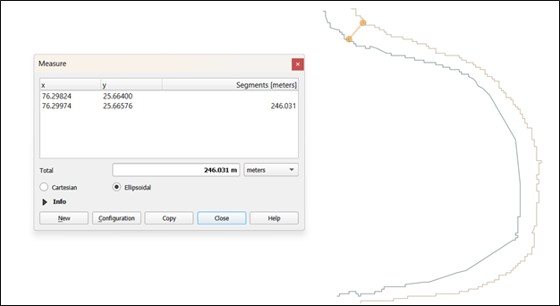

Boundary Coordinates
Lat:
25.63518° - 25.6667°
Lon:
76.29217° - 76.3203°
Year_1990_month_01

waves
Clear river channel extraction
straighten
Precise boundary delineation
Year_1990_month_04

water
Seasonal variation detected
compare_arrows
Width changes from January
Output of Boundary 1 (All Layers Active)

timeline
Temporal analysis across time periods
analytics
River morphology changes
tracked
insights
Boundary shifts mapped over
time